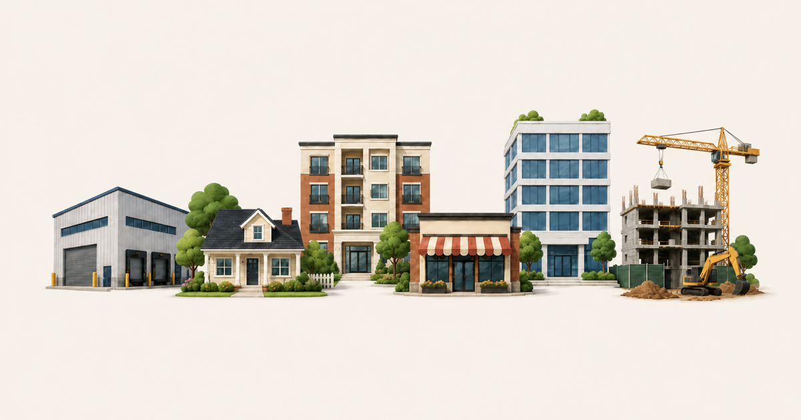

Accelerating property research with AI-powered tools.

The Challenge
CRE teams are increasingly using AI tools to accelerate BOVs, pitch materials, and other marketing documents. But, producing a high quality BOV still requires brokers and marketing teams to pull information from multiple sources, including property records, sales data, zoning resources, ownership records, and internal branding templates.
The result is a fragmented process with considerable manual research, repeated data entry, and inconsistent outputs. This slows down prospecting and makes it harder for teams to respond quickly when an opportunity to win an assignment emerges.
The Solution
altr designed and built cre harness, a custom AI research and document production system for CRE teams. It connects property research, comparable sales, ownership intelligence, and company branding in one workflow, helping teams move from a property address to a polished, on brand deliverable faster.
Key capabilities include:
- Identifying and organizing relevant public record sales to support broker led comparable analysis
- Researching zoning, land use, flood zone information, and traffic counts across public data sources
- Surfacing potential disposition opportunities using signals such as estimated loan maturity, ownership tenure, and holding period
- Tracing ownership through property records and business entities to identify the individuals behind an LLC
- Generating standardized, on brand BOVs and other CRE marketing materials
The Impact
cre harness has improved how multiple CRE teams conduct property research, pursue new assignments, and produce client facing materials.
Teams can evaluate more opportunities, reduce time spent moving between disconnected research tools, and create polished deliverables faster. This allows brokers to spend more time applying market knowledge, building owner relationships, and pitching for the business.
By standardizing both the research process and final presentation, the system gives teams greater confidence in their work and provides a differentiated capability they can bring into owner conversations.